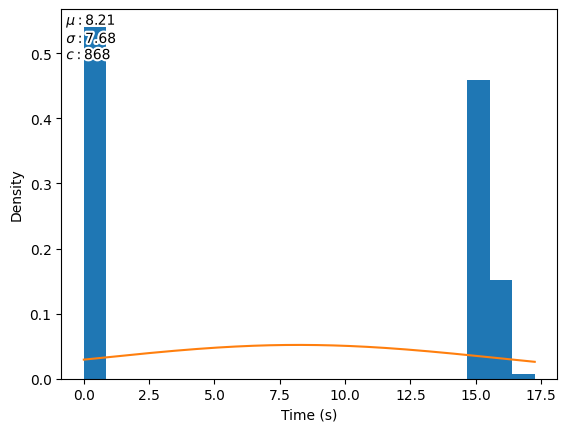
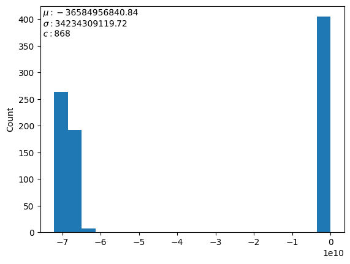
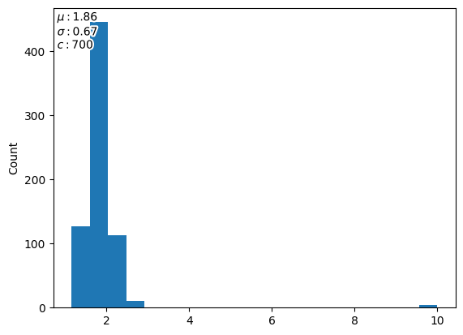
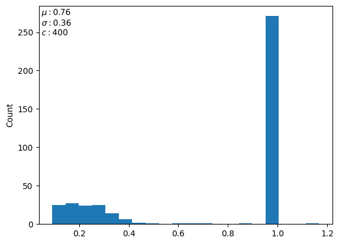

Problems¶
All evaluation functions provided by the benchmark suite are required to be minimized. If the objective value of the original underlying problem is to be maximized, the evaluation function provided has its value multiplied by \(-1\).
Note
Evaluation runtimes are measured on a Intel(R) Xeon(R) Gold 6148 CPU @ 2.40GHz CPU, using random search.
Windmill Wake Simulator¶
- bibtex
floris2020- repository
- parameters
- --file
The path to the windpark/windmill specification. We recommend using example_input.json from the FLORIS repository. (required)
- -n
The number of windmills to be placed. (default: 3)
- -w
The width of the area in which the windmills are to be placed. (default: 333.33 *
-n)- -h
The height of the area in which the windmills are to be placed. (default: 333.33 *
-n)- --wind-seed
The random seed used for generating the distribution and strength of the wind. (default: 0)
- --n-samples
The number of random wind strength samples to evaluate. More is less noisy but takes more time. Passing the string
Nonewill use a fixed set of wind strengths (previous behaviour, fast, no noise) (default: 5)
- dimensionality
\(2n\), all continuous (
cont)- constraints
Windmills are not allowed to be located within a factor of two of each others’ radius, this constraint has been incorporated into the objective function.
- description
The layout of the windmills in a wind farm has noticeable impact on the amount of energy it produces. This benchmark problem employs the FLORIS wake simulator to analyse how much power production is lost by having windmills be located in each others wake. The objective is to maximize power production.
- runtime
At ``-n`` = 3:
At ``-n`` = 5:
- fitness
At ``-n`` = 3:

At ``-n`` = 5:

Electrostatic Precipitator*¶
- publications
([DRE+18])
- bibtex
(
daniels2018suite)- repository
- parameters
None
- dimensionality
\(49\) - all categorical (
cat)- runtime

- fitness
- 
- description
An Electrostatic Precipitator is a large gas filtering installation, whose efficiency and efficiacy is dependent on how well the intake gas is distributed. This installation has slots – named baffles – which can be of various types, each having a different impact on the distribution. This benchmark problem employs the OpenFOAM Computational Fluid Dynamics simulator, implemented as part of the CFD Test Problem Suite by Daniels et al. . The goal is to find a configuration that has the best resulting distribution.
HPO / XGBoost¶
- parameters
- --folder
The folder containing the unpacked files of the Steel Plates Faults dataset. (required)
- --time-limit
The time limit for a single evaluation of the objective function in seconds. A that requires more time than what time time limit allows will return an objective value of 0 (default: 8) TODO: Setting this parameter still needs to be implemented.
Important
The default time limit is based on a Intel(R) Xeon(R) Gold 6148 CPU @ 2.40GHz, adjust accordingly to hardware used.
- dataset
Dataset provided by Semeion, Research Center of Sciences of Communication, Via Sersale 117, 00128, Rome, Italy. www.semeion.it
- dimensionality
\(135\) - \(117\) categorical (
cat), \(7\) integer (int), \(11\) continuous (cont), contains conditionals- runtime

- fitness
- 
- description
Machine Learning approaches often have a large amount of hyperparameters of varying types. This benchmark makes use of scikit-learn to build an XGBoost classifier with per-feature preprocessing. Evaluation of a solution is performed by k-fold cross validation, with the goal to maximize accuracy.